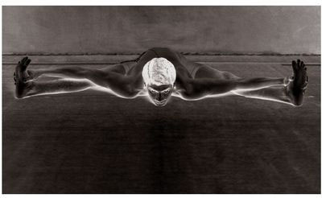
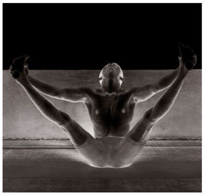

There are fourteen vinyasas in Garbha Pindasana, the 8th of which is its state (see figure).
METHOD
Begin by doing the six vinyasas described in earlier asanas, and then sit in the 7th vinyasa of Paschimattanasana. Next, do Padmasana by placing the right foot on the left thigh and the left foot on the right thigh, insert both arms past the elbow through the openings between the thigh and calf, hold the ears with the hands, sitting purely on the buttocks, straighten the chest and spinal column, press both heels on either side of the navel, and remain in this position, doing rechaka and puraka as long as possible; this is the 7th vinyasa. Then, bend the head forward completely, take hold of the head with the hands and, doing rechaka, roll back on the spine, keeping the spine rounded. Next, doing puraka, roll forward toward the buttocks and, in this way, continue to roll in a clockwise direction until a full circle has been completed, doing rechaka on the roll back and puraka on the roll forward; this is the 8th vinyasa. Next, roll forward and up, pressing the hands to the floor and lifting the body up off the floor, doing puraka; this is the 9th vinyasa. The vinyasas and breathing that follow are described in foregoing asanas.
UPAVISHTA KONASANA, 8TH VINYASA

UPAVISHTA KONASANA, 9TH VINYASA

BENEFITS
Garbha Pindasana dissolves the fat of the lower abdomen, purifies the manipura, or third, chakra, and wards off diseases of the liver and spleen.